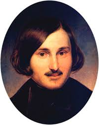
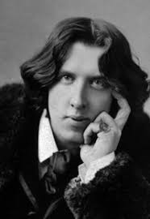

Як важливо бути (з) Оскаром…
У Голлівуді всі знають це. Нічого важливішого і бути не може.
Але ми не про Голлівуд.
Ми про паралелі доль двох геніїв.
1. Представник інтелектульної родини молодшого народу імперії прибуває до центру імперії і починає літературну кар'єру.
2. Починає з віршів, казок і легенд (байок), які могли народитися лише в паралельному світі, смачно приправлені романтизмом, готикою і фантастикою.
3. Далі намагання стати актуальним драматургом аж до політичної публіцистики.
4. Реалістичний роман з критикою сучасного автору суспільства з містичним алегоріями навколо продажу душі.
5. Мандри Європою. Париж. Рим.
6. Травля і нерозуміння в культурній столиці і останній твір про розпад особистості в лещатах формальних і фізичних обмежень, запроваджених державою і схвалених суспільством.
7. Рання, несправедлива і водночас логічна смерть. Після сорока під улюлюкання суспільства геній наближається невідворотно до смерті.
Знову автор про Гоголя.
Не зовсім.
Це про Оскара Вайльда.
 О́скар Фі́нґал О'Фла́герті Вілс Вайлд (або Уайльд), (Oscar Fingal O'Flahertie Wills Wilde; 16 жовтня 1854, Дублін, Ірландія, Сполучене королівство — 30 листопада 1900, Париж, Франція) — видатний ірландський англомовний поет, драматург, прозаїк, есеїст.
Як же важко бути Оскаром...
Порівняйте
| Порівняйте | Гоголь | Вайльд |
|---|---|---|
| Шлях до успіху | З Полтави до Петербурга | З Дубліна до Лондона |
| Казковий дебют | байки рудого Панька з хутору біля Диканьки | Щасливий принц та інші казки |
| Готичні екзерсиси | Вій | Привид замку Кентервілль |
| Театральні успіхи | Ревізор, Одруження | Ідеальний чоловік, Як важливо бути серйозним |
| Славнозвісні мандри | Рим | Америка |
| Фаустиянський роман | Мертві душі | Портрет Доріана Грея |
| Публічна ганьба | Вибрані місця з листування з друзями | Сумнозвісний процес |
| Розпад особистості | Записки божевільного | Балада Реддінгзької тюрми |
| Прикра смерть | 43 роки, Москва | 46 років, Париж |
Між смертю Гоголя і народженням Вайлда 2 роки - отака естафета.
Як важко літати Гоголем...